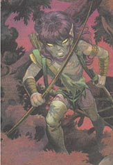

DARK ELF

Темные эльфы - раса эльфов-отступников, использующих свою силу во имя зла.
Они от природы умны, но пренебрегли умственными науками и стали более проворными
в воровстве и озорстве. Как и эльфы, темные эльфы видят в темноте и передвигаются
незаметно. Темные эльфы должны оставаться злыми, чтобы использовать свои
заклинания. Те, кто стали добрыми, вызывают только усмешку. Темные эльфы
обжигаются от прикосновения к мифрилу.
Базовый экспириенс для Темных Эльфов:
Witch = 1500 Cleric = 1500 Thief = 1500 Warrior = 1500
Warlock = 1700 Ninja = 1800 AntiPaladin = 1800 Necromanser = 1800